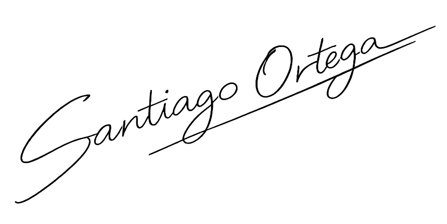
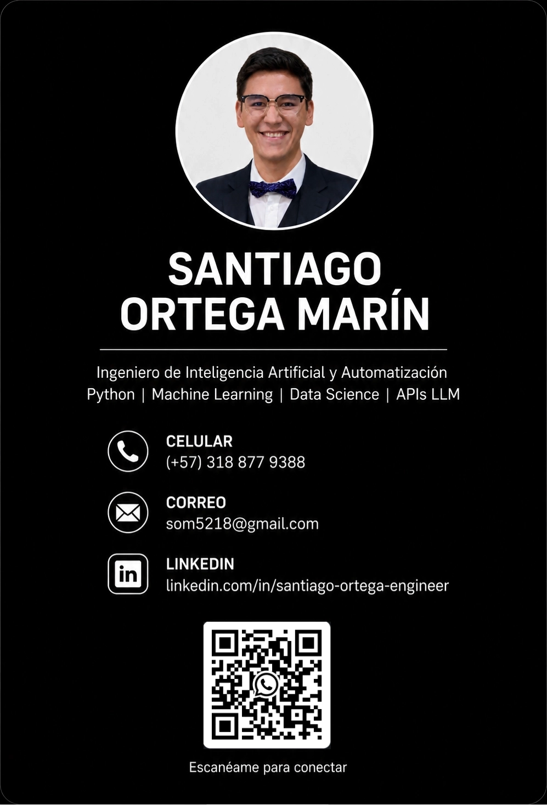

AI & Automation
Engineer
Ingeniero en IA &
Automatización
I build AI-powered systems, automation workflows and data-driven solutions using Python, LLM APIs and modern backend technologies. Construyo sistemas basados en IA, flujos de automatización y soluciones impulsadas por datos usando Python, APIs de LLM y tecnologías backend modernas.


About MeSobre Mí
As an AI & Automation Solutions Engineer, I specialize in bridging the gap between cutting-edge artificial intelligence research and production-ready enterprise systems. My focus is on applied AI, backend architecture, and workflow automation to solve complex real-world operational problems. Como Ingeniero de Soluciones de IA y Automatización, me especializo en cerrar la brecha entre la investigación de IA de vanguardia y los sistemas empresariales listos para producción. Mi enfoque es la IA aplicada, arquitectura backend y automatización de flujos de trabajo para resolver problemas operativos complejos.
- Developed robust automation systems using Python, orchestrating complex pipelines and data processing workflows.Desarrollo de sistemas de automatización robustos usando Python, orquestando flujos de trabajo complejos y procesamiento de datos.
- Built and deployed AI-assisted systems, chatbots, and operational platforms managing 1500+ records and 300+ company profiles.Construcción y despliegue de sistemas asistidos por IA, chatbots y plataformas operativas gestionando más de 1500 registros y 300 perfiles de empresas.
- Strong academic foundation in biomedical AI, with hands-on experience in complex data pipelines (MRI, DTI, FreeSurfer).Sólida base académica en IA biomédica, con experiencia práctica en complejas canalizaciones de datos (MRI, DTI, FreeSurfer).
Tech StackTecnologías
AI & DataIA & Datos
AI AutomationAutomatización IA
Backend & APIsBackend & APIs
Infrastructure & ToolsInfraestructura
Engineering ProjectsProyectos de Ingeniería
LLM-based Automation SystemsSistemas de Automatización basados en LLM
Built AI-powered automation systems using LLM APIs for content generation, workflow automation and operational optimization. Construcción de sistemas de automatización impulsados por IA utilizando APIs de LLM para generación de contenido, automatización de flujos de trabajo y optimización operativa.
Engineering FocusEnfoque Técnico
AI-assisted automation pipelines and prompt engineering.Pipelines de automatización asistida por IA e ingeniería de prompts.
Neurodevelopment Analysis using MRI & DTIAnálisis del Neurodesarrollo usando MRI & DTI
Developed computational workflows for neurodevelopment research using MRI and DTI data with Python and FreeSurfer. Desarrollo de flujos de trabajo computacionales para investigación en neurodesarrollo usando datos de MRI y DTI con Python y FreeSurfer.
Engineering FocusEnfoque Técnico
Biomedical AI, reproducible analysis and data processing.IA biomédica, análisis reproducible y procesamiento de datos.
Digital Platforms & Workflow AutomationPlataformas Digitales & Automatización
Developed digital systems and workflow automation tools for organizational processes, participant management and operational optimization. Desarrollo de sistemas digitales y herramientas de automatización de flujos de trabajo para procesos organizacionales, gestión de participantes y optimización operativa.
Key AchievementsLogros Clave
Managed 1500+ records and 300+ company profiles, payment integration with ePayco, automated communication systems.Gestión de más de 1500 registros y 300 perfiles de empresas, integración de pagos con ePayco, sistemas de comunicación automatizada.
AI Chatbot & Automation SolutionsChatbot IA & Soluciones de Automatización
Built chatbot-oriented automation systems for user support, automated communication and operational assistance. Construcción de sistemas de automatización orientados a chatbots para soporte al usuario, comunicación automatizada y asistencia operativa.
ExperienceExperiencia
AI & Automation Solutions EngineerIngeniero de Soluciones de IA y Automatización
2022 - 2025- Spearheaded automation engineering initiatives and developed robust Python systems.Lideré iniciativas de ingeniería de automatización y desarrollé robustos sistemas en Python.
- Architected and deployed AI-powered workflows and digital platforms.Arquitectura y despliegue de flujos de trabajo impulsados por IA y plataformas digitales.
- Focused on process optimization through custom APIs and integrated operational systems.Enfoque en la optimización de procesos a través de APIs personalizadas y sistemas operativos integrados.
- Provided technical leadership to guide automation strategies and system integrations.Proporcioné liderazgo técnico para guiar las estrategias de automatización y las integraciones de sistemas.
EducationEducación
Master's in Artificial IntelligenceMaestría en Inteligencia Artificial
Top 3% academic performance of the last five years. Dentro del 3% de mejor rendimiento académico de los últimos cinco años.
BSc Electronic EngineeringIngeniería Electrónica
Let's connectConectemos
Open to remote opportunities, startups and AI-driven technical roles. Abierto a oportunidades remotas, startups y roles técnicos impulsados por IA.